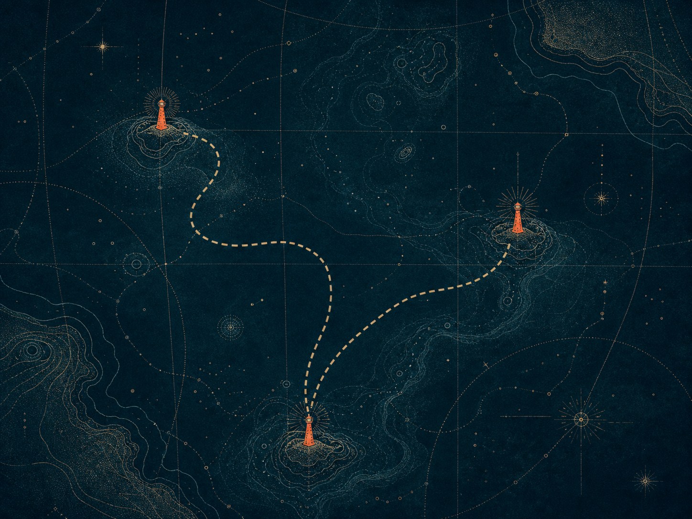

跳到主要内容
D
[[SITE_NAME]]
Drift Index · Field Notes
航海图
收录手记
链接净化台
编辑原则
UNKNOWN COORDINATE
SIGNAL LOST · 404

N --°--′ / E ---°--′
NO CHARTED ROUTE
Error 404 · Signal lost
这处坐标
已经漂走了。
你抵达的页面不在当前航海图中。可能是地址输入有误，也可能是旧航标已经被撤下。
返回航海图
查看收录手记